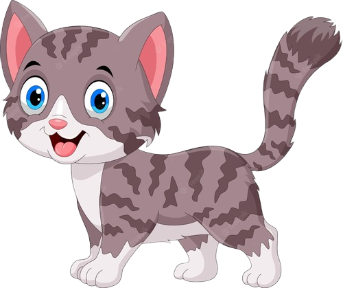

Toxoplasmose

A toxoplasmose, popularmente conhecida como doença do gato,
é uma doença
infecciosa provocada pelo parasita Toxoplasma gondii (T. gondii),
encontrado nas fezes do gato,
na
água ou em carne malcozida como porco ou cordeiro, contaminados com o parasita.
Depoimentos
Ouça os relatos de pessoas que já contraíram a Toxoplasmose.